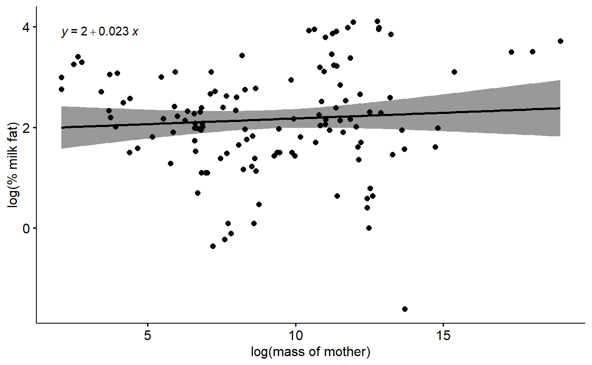
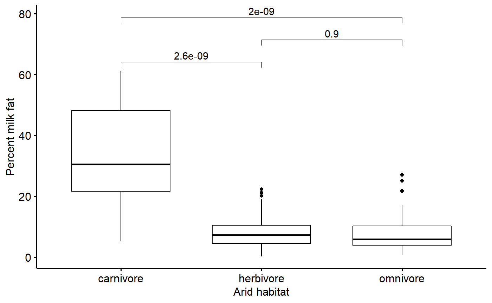
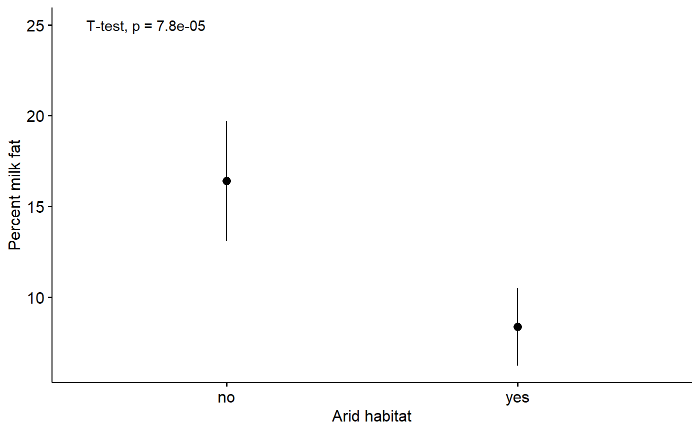

Appendix-6c-Primary_figure.RmdFor you final project you need to display a/the key result of your study as a figure using R. Additinally, write an appropriate and detailed caption for it. Include the code for making the plot; you can include it in your main analysis script – clearly labled – or put it in a sperate file which loads the data and does what after data prep or modeling necessary for the pot. Additional annotations can be made in PowerPoint or another program if necessary. The final plot should be saved as a .ppt slide or image file (.jpeg).
In this the mammalsmilkRA repository I have split up the analysis into several subscripts:
These can be combined if you want.
A final, publication-worth plot should have
A good caption/legend should be a suscint but stand-alone summary of the data and model. Ideally, if a person looked at just the plot and the caption they should have a pretty good idea of how to interpret it even if they don’t have the rest of the paper.
Good information to include in a caption include
The ggpubr package has a large number of arguements and functions for making plots look cool. Information on ggpubr can be found [here.] (http://www.sthda.com/english/wiki/ggpubr-create-easily-publication-ready-plots)
Below are examples of plots for
library(dplyr) # for exploratory analyses
library(ggpubr) # plotting using ggplto2
library(cowplot)
library(lme4)
library(arm)
library(stringr)
library(bbmle)
library(plotrix) ##std.error function for SE
library(psych)
library(here)
# Functions
library(sjPlot)
library(sjlabelled)
library(sjmisc)file. <- "Appendix-2-Analysis-Data_mammalsmilkRA.csv"
path. <- here("/inst/extdata/",file.)
milk <- read.csv(path., skip = 3)
genus_spp_subspp_mat <- milk$spp %>% str_split_fixed(" ", n = 3)
milk$genus <- genus_spp_subspp_mat[,1]milk$fat.log <- log(milk$fat)
milk$mass.fem.log <- log(milk$mass.fem)summary(lm(fat.log ~ mass.fem.log,
data = milk))
#>
#> Call:
#> lm(formula = fat.log ~ mass.fem.log, data = milk)
#>
#> Residuals:
#> Min 1Q Median 3Q Max
#> -3.8711 -0.6374 -0.0243 0.7396 1.8717
#>
#> Coefficients:
#> Estimate Std. Error t value Pr(>|t|)
#> (Intercept) 1.95288 0.26550 7.355 2.02e-11 ***
#> mass.fem.log 0.02255 0.02734 0.825 0.411
#> ---
#> Signif. codes: 0 '***' 0.001 '**' 0.01 '*' 0.05 '.' 0.1 ' ' 1
#>
#> Residual standard error: 1.053 on 128 degrees of freedom
#> Multiple R-squared: 0.005287, Adjusted R-squared: -0.002484
#> F-statistic: 0.6804 on 1 and 128 DF, p-value: 0.411ggscatter(data = milk,
y = "fat.log",
x = "mass.fem.log",
xlab = "log(mass of mother)",
ylab = "log(% milk fat)",
add = "reg.line",
conf.int = T) +
stat_regline_equation()
Additionally annotations could include p-value for slope of regression line, R^2 value, sample size. I have included these instead in teh caption.
There are 3 diet categories.
summary(milk$diet)
#> carnivore herbivore omnivore
#> 32 61 37We could do a 1-way ANOVA to test for differences between these 3 categories, ignoring phylogency, size, and any other ccovarites.
First a standard model of log-milk fat versus mammal diet.
m.diet <- lm(fat.log ~ diet,
data = milk)
coef(summary(m.diet))
#> Estimate Std. Error t value Pr(>|t|)
#> (Intercept) 3.299988 0.1464421 22.534421 3.318210e-46
#> dietherbivore -1.483205 0.1808184 -8.202733 2.233413e-13
#> dietomnivore -1.566369 0.1999814 -7.832572 1.649622e-12The above model gives us an intercept (“(Intercept)”) term and 2 effect sizes. R defaults to setting the intercept alphabetically, so carnivores are set as the intercept. The effect size “dietherbivore” is the difference between the intercept and herbivores, that is, the difference between carnviores and herbivores. The “dietomnivore” effect sizes is the diference between the intercept and ominivores.
We can calcualte the means for all three groups directly like this using a “means model”
m.diet.means <- lm(fat.log ~ - 1 + diet,
data = milk)
coef(summary(m.diet.means))
#> Estimate Std. Error t value Pr(>|t|)
#> dietcarnivore 3.299988 0.1464421 22.53442 3.318210e-46
#> dietherbivore 1.816783 0.1060660 17.12881 8.223522e-35
#> dietomnivore 1.733619 0.1361884 12.72957 1.962367e-24my_comparisons <- list(
c("carnivore", "herbivore"),
c("herbivore", "omnivore"),
c("carnivore", "omnivore") )
ggboxplot(data = milk,
y = "fat",
x = "diet",
desc_stat = "mean_ci",
xlab = "Arid habitat",
ylab = "Percent milk fat") +
stat_compare_means(method = "t.test",
comparisons = my_comparisons)
We can get confidence intervals for each of these means like this:
confint(m.diet.means)
#> 2.5 % 97.5 %
#> dietcarnivore 3.010206 3.589771
#> dietherbivore 1.606898 2.026669
#> dietomnivore 1.464127 2.003111#plot_model(m.diet)
#visreg(m.diet)For information on ggpubr and adding p-values using stat_compare_means() see here.
The t-test we are running
t.test(fat ~ arid, data = milk)
#>
#> Welch Two Sample t-test
#>
#> data: fat by arid
#> t = 4.0816, df = 127.95, p-value = 7.826e-05
#> alternative hypothesis: true difference in means is not equal to 0
#> 95 percent confidence interval:
#> 4.146069 11.948437
#> sample estimates:
#> mean in group no mean in group yes
#> 16.401099 8.353846Plot with p-values from t-test.
ggerrorplot(data = milk,
y = "fat",
x = "arid",
desc_stat = "mean_ci",
xlab = "Arid habitat",
ylab = "Percent milk fat") +
stat_compare_means(method = "t.test",
label.y = 25,
label.x = 0.6)